SA07 — Outbox Pattern — DB Aur Message Broker Ko Reliably Kaise Sync Kare?
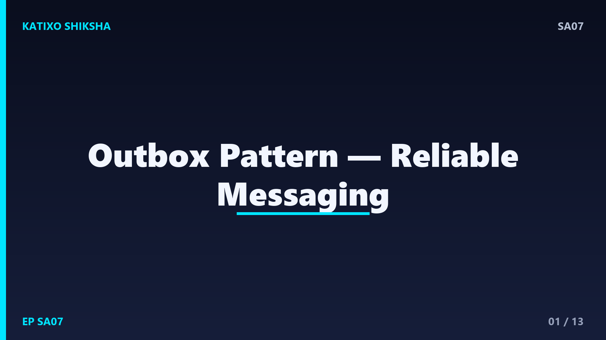
Slide 1दोस्तों, सोचिए आपकी service ने एक order database में save किया, और फिर उसे एक event के तौर पर Kafka या किसी message broker पर भेजना है ताकि बाकी services को पता चले. अब मान लो database में save तो हो गया, पर event भेजने से ठीक पहले service crash हो गई. नतीजा — order तो है, पर बाकी दुनिया को कभी पता नहीं चला. Data और messages आपस में बेमेल हो गए. इसी खतरनाक problem का साफ़ हल है Outbox pattern. आज Katixo KhojLab की इस episode में हम इसे Hinglish में समझेंगे. चलिए शुरू करते हैं।
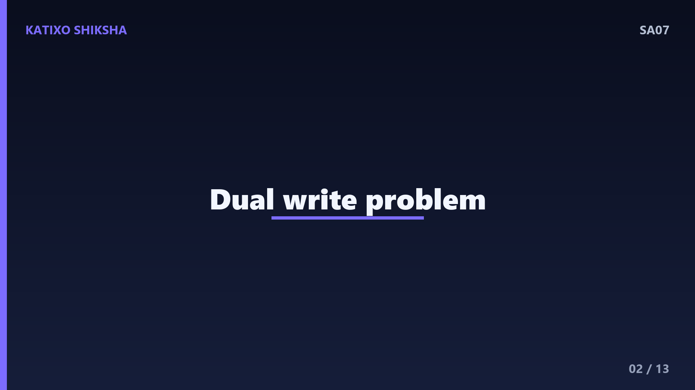
Slide 2पहले problem को ठीक से समझें, जिसे dual write problem कहते हैं. आपकी service को दो अलग systems में लिखना है — एक अपना database, और दूसरा message broker जैसे Kafka. दिक्कत ये है कि ये दो अलग systems हैं, और इन दोनों पर एक साथ एक atomic transaction नहीं चल सकती. तो या तो दोनों हों, या दोनों ना हों — ये guarantee नहीं मिलती. बीच में crash या network failure हुआ तो एक हो जाएगा और दूसरा छूट जाएगा. यही inconsistency का जड़ है.
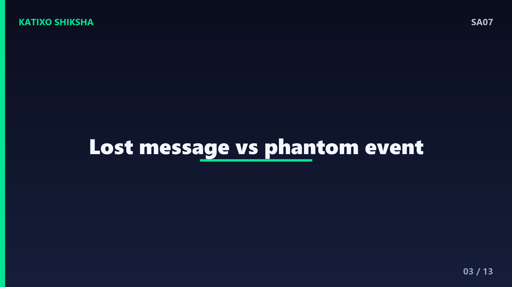
Slide 3इस dual write को थोड़ा और साफ़ करते हैं. दो ख़तरनाक हालात बनते हैं. पहला — database में save हो गया पर event नहीं गया, तो दूसरी services को update का पता ही नहीं चला, यानी lost message. दूसरा — event चला गया पर database transaction fail होकर rollback हो गया, तो आपने ऐसी चीज़ का event भेज दिया जो असल में हुई ही नहीं, यानी phantom या ghost event. दोनों ही हालत में आपके distributed system का data भरोसे लायक नहीं रहता.
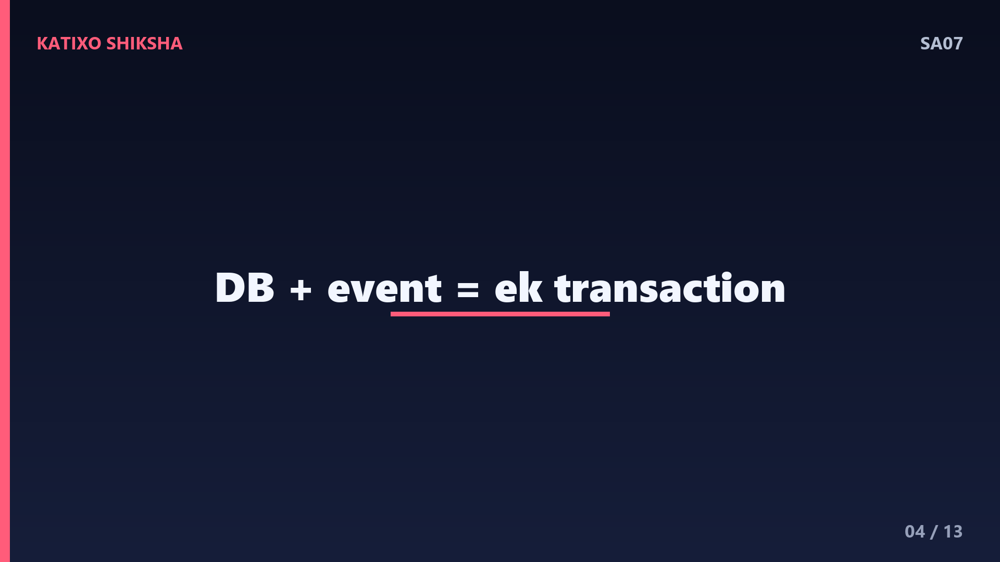
Slide 4अब Outbox pattern का core idea. हम message broker को बीच में से हटा देते हैं, उस crucial moment पर. जब आप business data save करते हो, उसी एक ही database transaction में, उसी database के अंदर एक outbox नाम की table में वो event भी लिख देते हो. अब चूँकि दोनों एक ही database में और एक ही transaction में हैं, ये पक्का atomic है — या तो order और event दोनों save होंगे, या दोनों में से कुछ भी नहीं. Dual write problem यहीं ख़त्म हो जाती है.
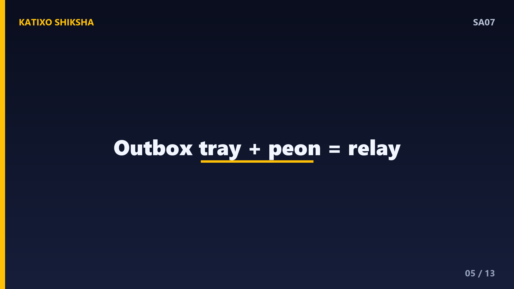
Slide 5इसे एक आसान analogy से समझते हैं. सोचिए आप दफ़्तर में एक काम करते हो और साथ ही एक outbox tray में एक चिट्ठी डाल देते हो — दोनों एक ही झटके में, एक ही डेस्क पर. अब एक अलग peon समय-समय पर आता है, tray से चिट्ठियाँ उठाता है और post office पहुँचा देता है. अगर peon किसी दिन ना आए, तो भी चिट्ठी tray में सुरक्षित है, खोएगी नहीं — अगली बार चली जाएगी. वो outbox tray ही है हमारी outbox table, और peon है हमारा relay process.
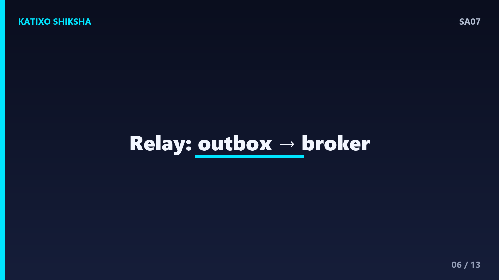
Slide 6अब दूसरा हिस्सा — outbox table से events को असल में broker तक कौन पहुँचाता है? इसके लिए एक अलग process होता है, जिसे message relay या publisher कहते हैं. ये process लगातार outbox table को पढ़ता रहता है, नए unsent events उठाता है, उन्हें message broker जैसे Kafka पर publish करता है, और publish हो जाने पर उन्हें outbox में sent मार देता है या delete कर देता है. इस तरह business logic और message publishing अलग हो जाते हैं, और दोनों अपना काम भरोसे से करते हैं.
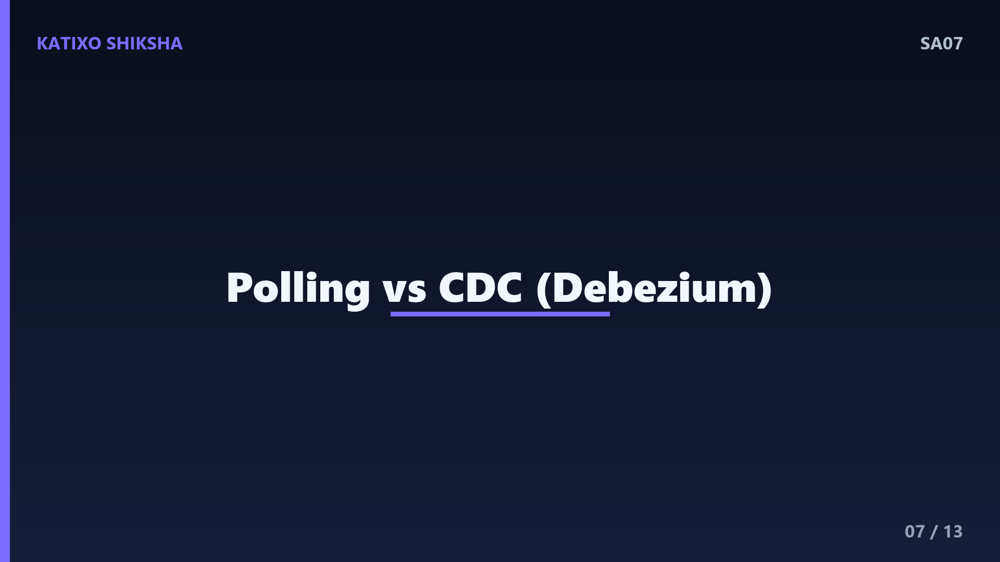
Slide 7अब relay events को पढ़ता कैसे है — इसके दो तरीके हैं. पहला है polling publisher — relay हर थोड़ी देर में outbox table से नए rows query करता रहता है. ये simple है पर थोड़ी latency और बार-बार database पर query का load डालता है. दूसरा और बेहतर तरीका है Change Data Capture, यानी CDC. इसमें एक tool जैसे Debezium सीधे database के transaction log को पढ़ता है और नया row आते ही event बना देता है — बिना table को बार-बार poll किए. CDC ज़्यादा efficient और real-time है.
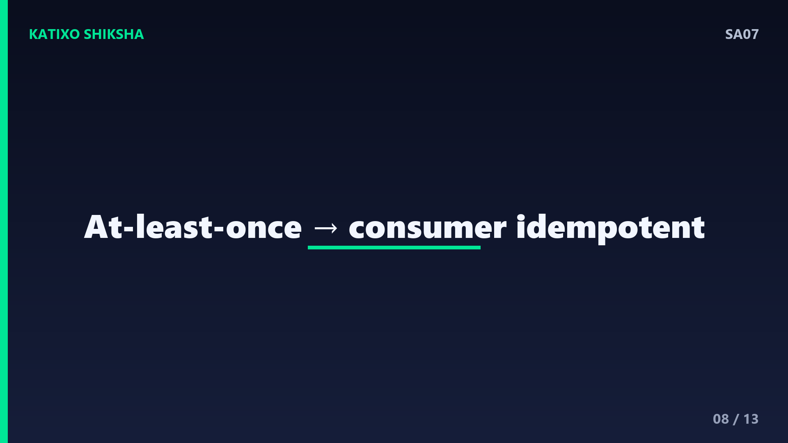
Slide 8अब एक बहुत ज़रूरी बात — Outbox pattern at-least-once delivery देता है, exactly-once नहीं. मतलब क्या? कभी-कभी एक ही event दो बार publish हो सकता है — जैसे relay ने event Kafka पर भेज दिया पर outbox में sent mark करने से पहले crash हो गया, तो दोबारा start होने पर वो उसी event को फिर भेज देगा. इसलिए receiver side को idempotent बनाना ज़रूरी है, यानी एक ही event दो बार आए तो भी असर एक ही बार जैसा हो. ये interview में बताना ज़रूरी point है.
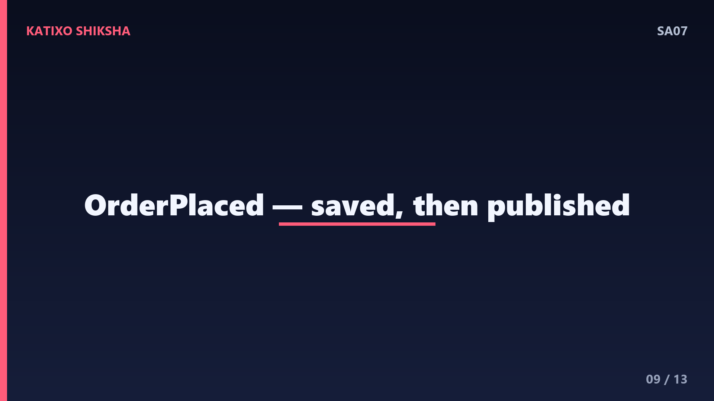
Slide 9अब एक concrete example से पूरा flow जोड़ते हैं. User ने order place किया. Order service एक single transaction में दो काम करती है — orders table में नया order, और outbox table में एक OrderPlaced event, दोनों एक साथ commit. अब relay process outbox से वो OrderPlaced event उठाता है, उसे Kafka पर publish करता है, और outbox में उसे sent mark कर देता है. आगे Inventory और Notification services उस event को Kafka से सुनकर अपना काम करती हैं. कहीं crash हो भी जाए, event tray में सुरक्षित था, खोता नहीं.
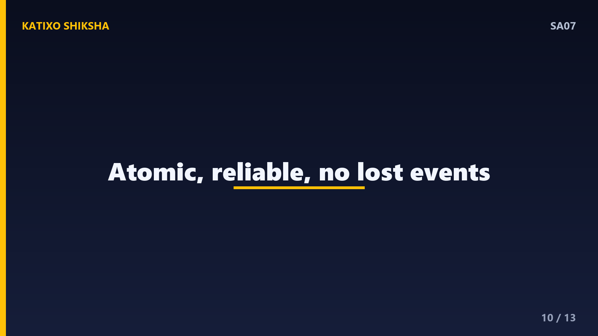
Slide 10अब फ़ायदे समेट लेते हैं. पहला और सबसे बड़ा — atomicity, business data और event एक ही transaction में, तो कभी बेमेल नहीं. दूसरा — कोई event कभी lost नहीं होता, क्योंकि वो पहले सुरक्षित database में बैठता है. तीसरा — reliability बढ़ती है, service crash या broker down होने पर भी events बाद में चले जाएँगे. और चौथा — ये किसी भी message broker के साथ काम करता है, चाहे Kafka हो या RabbitMQ. यही वजह है कि event-driven microservices में ये एक standard pattern बन चुका है.
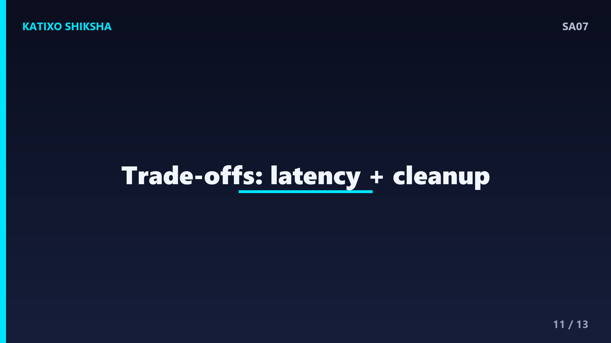
Slide 11अब कुछ trade-offs और interview points. एक कीमत है थोड़ी latency — event तुरंत नहीं, relay के उठाने के बाद जाता है. दूसरा — outbox table समय के साथ बढ़ती है, इसलिए sent events को समय-समय पर clean up करना पड़ता है. एक common सवाल — Outbox pattern dual write problem को कैसे हल करता है? जवाब — दोनों writes को एक ही database transaction में लाकर, ताकि वो atomic हो जाएँ. और याद रखिए, ये अक्सर Saga pattern के साथ मिलकर reliable event-driven systems बनाता है.
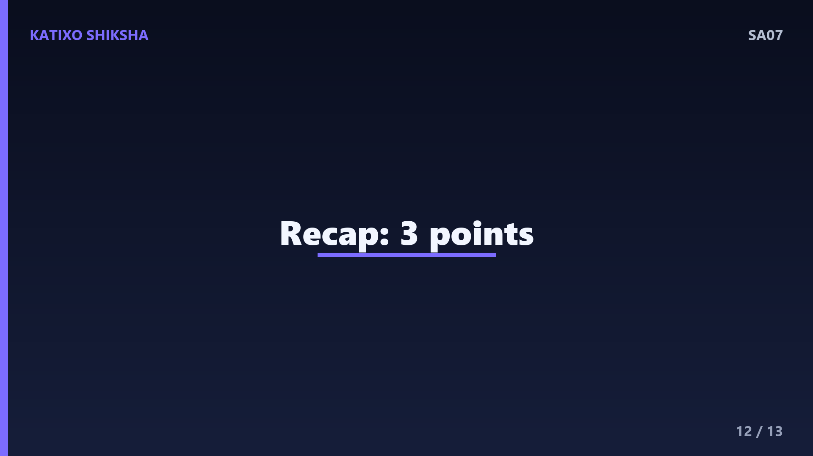
Slide 12तो चलिए एक quick recap कर लेते हैं, तीन points में. पहला — Outbox pattern dual write problem हल करता है, यानी database और message broker दोनों में लिखते वक़्त बेमेल होने की समस्या. दूसरा — business data और event दोनों एक ही database transaction में, एक outbox table में लिखे जाते हैं, जिससे ये atomic हो जाता है. तीसरा — एक अलग relay process polling या CDC से outbox पढ़कर events को broker पर publish करता है, और ये at-least-once delivery देता है, इसलिए consumers idempotent होने चाहिए.
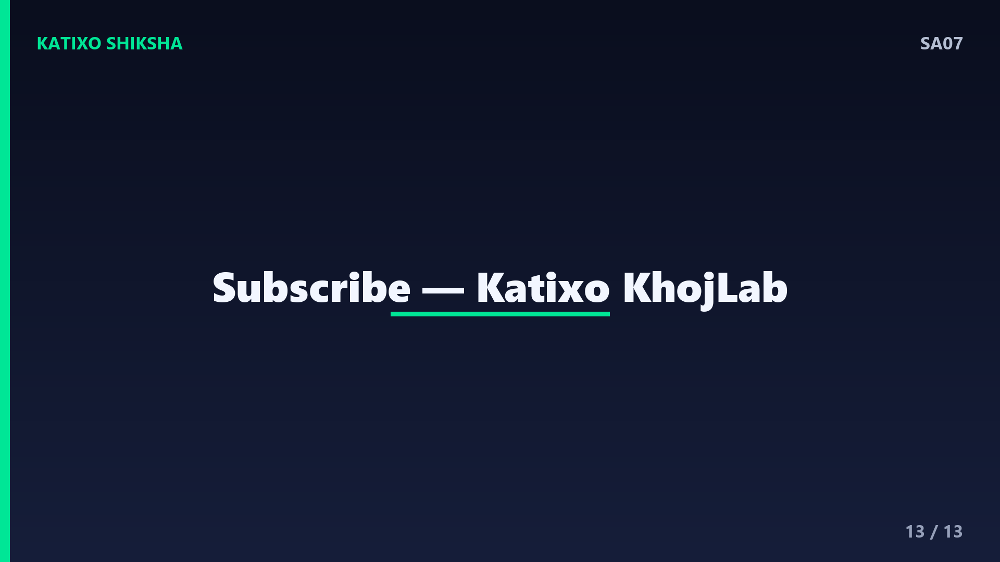
Slide 13तो दोस्तों, आज आपने सीखा कि event-driven microservices में database और message broker को reliably sync रखने का सबसे भरोसेमंद तरीका है Outbox pattern. अगली बार जब interview में पूछा जाए कि data save और event publish को atomic कैसे बनाओगे, तो आप confidently outbox table, dual write problem, relay process, CDC और at-least-once delivery की बात कर पाओगे. एक बार किसी छोटे order service में outbox table बनाकर खुद try करें, concept पक्का हो जाएगा. Aisi aur system design videos ke liye Katixo KhojLab subscribe karein! मिलते हैं अगली episode में।